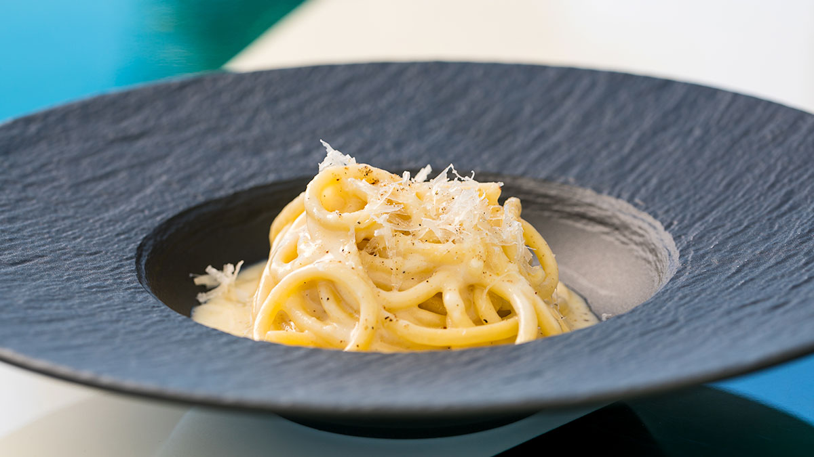
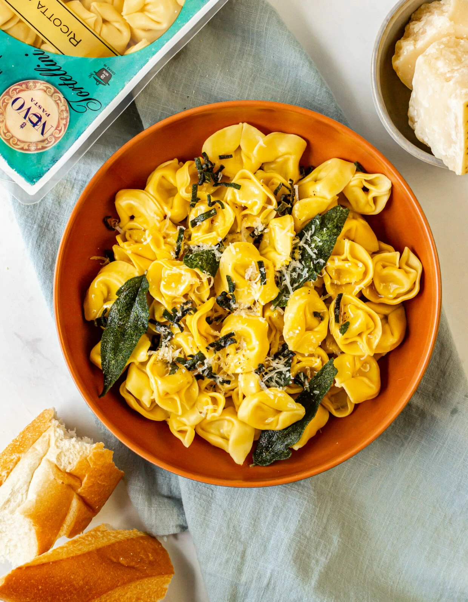
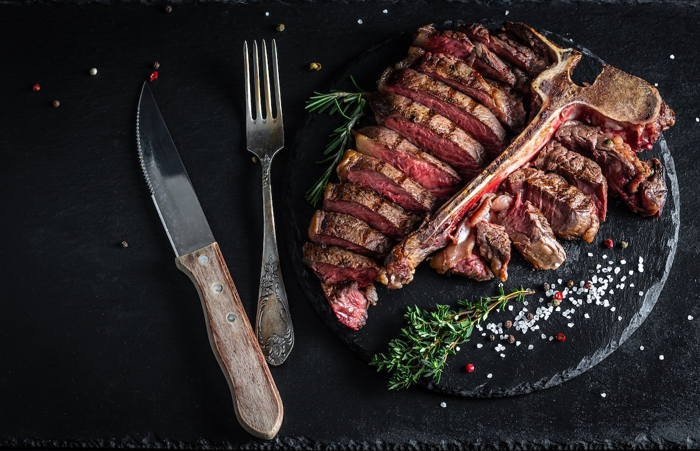

Cacio e Pepe

Description
Cacio e Pepe is a traditional Roman dish composed of a thick pasta and rich, creamy sauce. Meaning “cheese and pepper,” the dish consists of only a few ingredients, making it a quick, no-fuss meal to prepare at home.
Ingredients
- 12 oz. of tonnarelli or spaghetti
- 1 tbs. of olive oil
- 5.5 oz. pecorino cheese (Aged 18 months)
- 3.5 tbsp. parmesan (Aged 30 months)
- 3.5 tbsp. pecorino (Aged 24 months)
- Salt to taste
- Freshly cracked black pepper to taste
Steps
- Bring 12 cups of water to a boil in a pot. Season with salt.
- Add tonnarelli to the pot and stir occasionally for 1 minute for fresh pasta and 2 minutes for dry pasta
- Meanwhile, combine grated pecorino cheese, grated Parmesan cheese, olive oil, and ½ cup of the boiling water in a heavy skillet over medium heat, creating a cream. Grind black pepper to taste.
- Once the pasta is fully cooked, drain it in a strainer and add it to the skillet. Mix the pasta with the cream sauce. Add more olive oil or black pepper to achieve a lighter consistency.
- Finally, finish the dish with pecorino
Tortellini Burro e Salvia

Description
Each individual tortellini is stuffed with four types of cheese, which is then served with sage over warm butter and topped with parmigiano.
- Ricotta parmigiano tortellini
- 8 Tbsp butter
- 12 ea. fresh sage leaves, stacked and sliced thin
- Sea salt and black pepper, to taste
- 4 Tbsp parmigiano reggiano, grated
Steps
- Cook ravioli separately in salted boiling water according to package directions.
- While ravioli are cooking, place butter in a saucepan over medium-low heat and cook until butter starts to foam. Add sage and cook until crisp. Season with salt and pepper.
- Drain ravioli and place on a serving platter. Spoon sauce on top and sprinkle with Parmigiano as a finishing touch. Enjoy!
Bistecca Fiorentina

Description
This traditional Tuscan strip steak recipe utilizes just a handful of pantry staples to create a dish that any steak-lover is sure to love. Serve this simple dish with a glass of Italian red wine (like Chianti) to be instantly transported to the rolling hills of Tuscany.
Ingredients
- 1 2-pound porterhouse steak
- 1 bunch fresh rosemary
- 3 tablespoons extra virgin olive oil
- Sea salt and black pepper, to taste
Steps
- Preheat an outdoor charcoal grill over high heat.
- Dip the bunch of fresh rosemary into the olive oil and use the herbs to brush oil over the entire surface of the steak.
- Season both sides of the steak liberally with salt and pepper.
- Transfer the steak to the grill and cook until a deep brown crust has formed, about 5–7 minutes.
- Flip the steak and cook the other side until browned, about 5–7 minutes. If you have a food thermometer, test the internal temperature of the meat. A medium-rare steak will have an internal temperature of 130–135 degrees Fahrenheit.
- Remove the meat from the grill and allow the steak to rest for 10 minutes before carving.
- Slice the steak into strips and sprinkle with additional salt, pepper, and sprigs of fresh rosemary before serving.